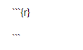
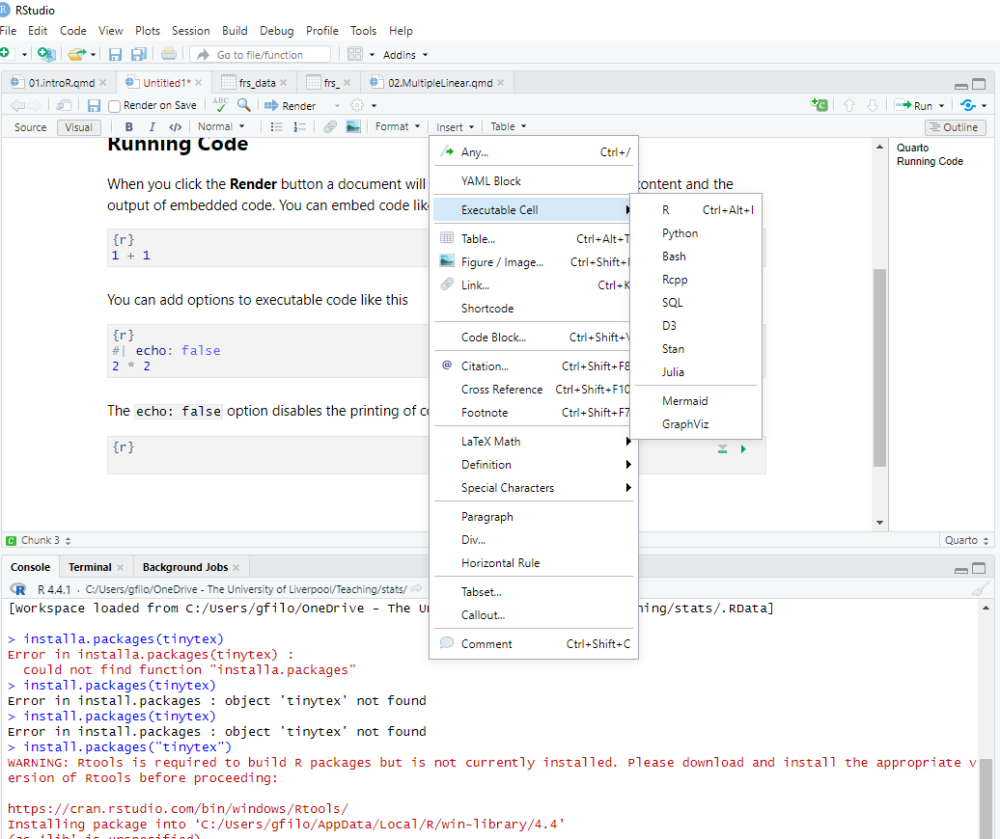
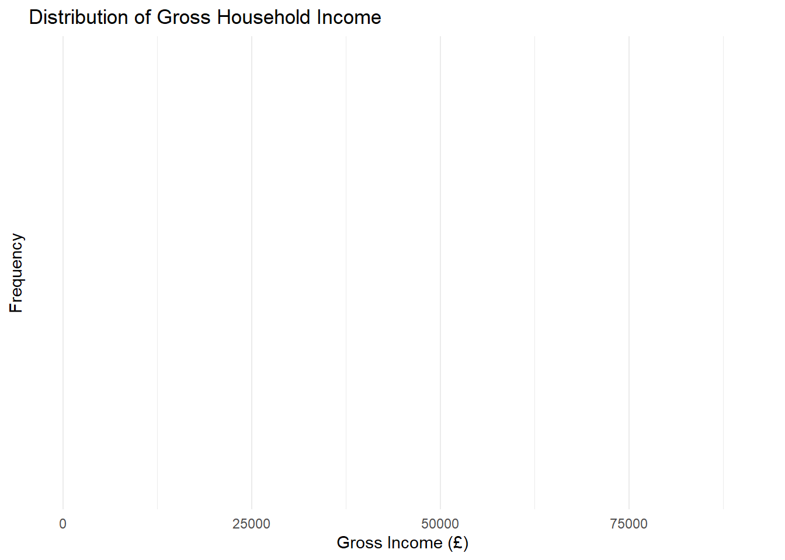

1 Lab: Introduction to R for Statistics
The following material has been readapted from:
- https://dereksonderegger.github.io/570L/1-introduction.html by Derek L. Sonderegger;
- https://pietrostefani.github.io/gds/environR.html by Elisabetta Pietrostefani and Carmen Cabrera-Arnau.*
The lecture’s slides can be found here.
For the lab sessions and your assignment, you will need the following software:
- R-4.2.2
- RStudio 2022.12.0-353
- The list of libraries in the next section
To install and update:
- R, download the appropriate version from The Comprehensive R Archive Network (CRAN)
- RStudio, download the appropriate version from Posit
1.1 R?
R is an open-source program that is commonly used in Statistics. It runs on almost every platform and is completely free and is available at www.r-project.org. Most of the cutting-edge statistical research is first available on R.
R is a script based language, so there is no point and click interface. While the initial learning curve will be steeper, understanding how to write scripts will be valuable because it leaves a clear description of what steps you performed in your data analysis. Typically you will want to write a script in a separate file and then run individual lines. This saves you from having to retype a bunch of commands and speeds up the debugging process.
1.2 R(Studio) Basics
We will be running R through the program RStudio which is located at rstudio.com. When you first open up RStudio the console window gives you some information about the version of R you are running and then it gives the prompt >. This prompt is waiting for you to input a command. The prompt + tells you that the current command is spanning multiple lines. In a script file you might have typed something like this:
for( i in 1:5 ){
print(i)
}Finding help about a certain function is very easy. At the prompt, just type help(function.name) or ?function.name. If you don’t know the name of the function, your best bet is to go the the web page www.rseek.org which will search various R resources for your keyword(s). Another great resource is the coding question and answer site stackoverflow.
1.2.1 Starting a session in RStudio
Upon startup, RStudio will look something like this.
Note: the Pane Layout and Appearance settings can be altered:
- on Windows by clicking RStudio>Tools>Global Options>Appearance or Pane Layout
- on Mac OS by clicking RStudio>Preferences>Appearance or Pane Layout.
You will also have a standard white background; but you can choose specific themes.
Source Panel (Top-Left)
This is where you write, edit, and view scripts, R Markdown/Quarto documents, or R scripts. It allows:
- Editing Scripts: Write and edit R scripts or documents (
.R,.Rmd,.qmd). - Executing the Code: Run lines, blocks, or the entire script directly from the editor.
Console Panel (Bottom-Left)
The Console is the main place to run R commands interactively. It allows:
- Executing the Code: Type and run R commands directly.
- Viewing outputs, warnings, and errors for immediate feedback.
- Browsing and reusing past commands (History Tab).
- Toggling between the R Console, and the Terminal (yuo don’t really need the latter).
Environment Panel (Top-Right)
This panel helps track variables, functions, and the history of commands used. It contains:
- Environment Tab: Shows all current variables, datasets, and objects in your session, including their structure and values.
- History Tab: Provides a record of past commands. You can re-run or move commands to the console or script.
Files / Plots / Packages / Help Panel (Bottom-Right)
This multifunctional panel is for file navigation, plotting, managing packages, viewing help, and managing jobs. It contains:
- Files Tab: Navigate, open, and manage files and directories within your project.
- Plots Tab: Displays plots generated in your session. You can export or navigate through multiple plots here.
- Packages Tab: Lists installed packages and allows you to install, load, and update packages.
- Help Tab: Displays help documentation for R functions, packages, and other resources. You can search for documentation by typing a function or package name.
Important: Unless you are working with a script, you will be likely writing code on the console.
At the start of a session, it’s good practice clearing your R environment (console):
rm(list = ls())In R, we are going to be working with relative paths. With the command getwd(), you can see where your working directory is currently set.
getwd() For ENVS225, download the material of the module an unzip it whever you like.
The folder structure should look like:
stats/
├── data/
├── labs_img/
└── labs/You can delete other sub-folders (e.g. docs).
This should be on your personal computer or if on a local machine, I suggest using the directory M: to store the folder, it can be accessed from every computer.
Then, in R Studio - on Windows by clicking RStudio>Tools>Global Options>General.. - on Mac OS by clicking RStudio>Preferences>Appearance or Pane Layout…
browse and set the folder you just creted as your working directory.
Check if that has been applied.
getwd() File paths in R work like this:
| File Path | Description |
|---|---|
MyFile.csv |
Look in the working directory for MyFile.csv. |
MyFolder/MyFile.csv |
In the working directory, there is a subdirectory called MyFolder and inside that folder is MyFile.csv. |
You do not need to set your working directory if you are using an R-markdown or Quarto document and you have it saved in the right location. The pathway will start from where your document is saved.
1.2.2 Using the console
Try to use the console to perform a few operations. For example type in:
1+1[1] 2Slightly more complicated:
print("hello world")[1] "hello world"If you are unsure about what a command does, use the “Help” panel in your Files pane or type ?function in the console. For example, to see how the dplyr::rename() function works, type in ?dplyr::rename. When you see the double colon syntax like in the previous command, it’s a call to a package without loading its library.
1.2.3 R as a simple calculator
You can use R as a simple calculator. At the prompt, type 2+3 and hit enter. What you should see is the following
# Some simple addition
2+3[1] 5In this fashion you can use R as a very capable calculator.
6*8[1] 484^3[1] 64exp(1) # exp() is the exponential function[1] 2.718282R has most constants and common mathematical functions you could ever want. For example, the absolute value of a number is given by abs(), and round() will round a value to the nearest integer.
pi # the constant 3.14159265...[1] 3.141593abs(1.77) [1] 1.77Whenever you call a function, there will be some arguments that are mandatory, and some that are optional and the arguments are separated by a comma. In the above statements the function abs() requires at least one argument, and that is the number you want the absolute value of.
When functions require more than one argument, arguments can be specified via the order in which they are passed or by naming the arguments. So for the log() function, for example, which calculates the logarithm of a number, one can specify the arguments using the named values; the order woudn’t matter:
# Demonstrating order does not matter if you specify
# which argument is which
log(x=5, base=10) [1] 0.69897log(base=10, x=5)[1] 0.69897When we don’t specify which argument is which, R will decide that x is the first argument, and base is the second.
# If not specified, R will assume the second value is the base...
log(5, 10)[1] 0.69897log(10, 5)[1] 1.430677When we want to specify the arguments, we can do so using the name=value notation.
1.2.4 Variables Assignment
We need to be able to assign a value to a variable to be able to use it later. R does this by using an arrow <- or an equal sign =. While R supports either, for readability, I suggest people pick one assignment operator and stick with it.
Variable names cannot start with a number, may not include spaces, and are case sensitive.
var <- 2*7.5 # create two variables
another_var = 5 # notice they show up in 'Environment' tab in RStudio!
var [1] 15var * another_var [1] 75As your analysis gets more complicated, you’ll want to save the results to a variable so that you can access the results later. If you don’t assign the result to a variable, you have no way of accessing the result.
1.2.5 Working with Scripts
R Scripts (.R files)
Traditional script files look like this:
# Problem 1
# Calculate the log of a couple of values and make a plot
# of the log function from 0 to 3
log(0)
log(1)
log(2)
x <- seq(.1,3, length=1000)
plot(x, log(x))
# Problem 2
# Calculate the exponential function of a couple of values
# and make a plot of the function from -2 to 2
exp(-2)
exp(0)
exp(2)
x <- seq(-2, 2, length=1000)
plot(x, exp(x))In RStudio you can create a new script by going to File -> New File -> R Script. This opens a new window in RStudio where you can type commands and functions as a common text editor.
This looks perfectly acceptable as a way of documenting what one does, but this script file doesn’t contain the actual results of commands you ran, nor does it show you the plots. Also anytime you want to comment on some output, it needs to be offset with the commenting character #. It would be nice to have both the commands and the results merged into one document. This is what the R Markdown file does for us.
R Markdown (.Rmd and .qmd files)
The R Markdown is an implementation of the Markdown syntax that makes it extremely easy to write webpages or scientific documents that include conde. This syntax was extended to allow users to embed R code directly into more complex documents. Perhaps the easiest way to understand the syntax is to look at an at the RMarkdown website.
The R code in a R Markdown document (.rmd file extension) can be nicely separated from regular text using the three backticks (3 times `, see below) and an instruction that it is R code that needs to be evaluated. A code chunk will look like:
for (i in 1:5) {print(i)}[1] 1
[1] 2
[1] 3
[1] 4
[1] 5In ENVS225: In this module we will be using .qmd a more flexible development of .rmd files.
Markdown files present several advantages compared to writing your code in the console or just using scripts. You’ll save yourself a huge amount of work by embracing Markdown files from the beginning; you will keep track of your code and your steps, be able to document and present how you did your analysis (helpful when writing the methods section of a paper), and it will make it easier to re-run an analysis after a change in the data (such as additional data values, transformed data, or removal of outliers) or once you spot an error. Finally, it makes the script more readable.
1.2.6 R Packages
One of the greatest strengths about R is that so many people have developed add-on packages to do some additional function. To download and install the package from the Comprehensive R Archive Network (CRAN), you just need to ask RStudio it to install it via the menu Tools -> Install Packages.... Once there, you just need to give the name of the package and RStudio will download and install the package on your computer.
Once a package is downloaded and installed on your computer, it is available, but it is not loaded into your current R session by default. To improve overall performance only a few packages are loaded by default and the you must explicitly load packages whenever you want to use them. You only need to load them once per session/script.
library(dplyr) # load the dplyr library, will be useful later1.3 Practice: Dataset and Dataframes
First of all, create a new Markdown document. We use the
File -> New File -> Quarto Document..dropdown option, and a menu will appear asking you for the document title, author, and preferred output type. You can select HTML, but you will need your assignment to be submitted in PDF; more on that later.Follow the practical below. You can describe what you are doing in normal text. See here for how to format normal text in Markdown documents
Remember, when you want to write code in a markdown document you have to enclose it like this:

or you can insert it manually:

Within this module we will be working with data stored in so-called datasets. A dataset is a structured collection of data points that represent various measurements or observations, often organized in a tabular format with rows and columns. A dataset might contain information about different locations, such as neighborhoods or cities, with each row representing a place and each column detailing characteristics like population density, average income, or number of green parks. For example, a dataset could be compiled to study patterns in urban mobility, where the data includes the number of daily commuters, the distance they travel, and the mode of transport they use. Datasets provide the essential building blocks for statistical analysis; they enable exploring relationships, identifying patterns, and drawing conclusions about certatin phenomena.
Examples of everyday datasets:
- Premier League Standings: Each row represents a team, with columns for points, games played, wins, draws, and losses.
- Movie Dataset: Each row represents a movie, with columns showing its title, genre, release year, director, and rating.
- Weather Dataset: Each row shows a day’s weather in a city, with columns for temperature, humidity, wind speed, and precipitation.
Usually, data is organized in
- Columns of data representing some trait or variable that we might be interested in. In general, we might wish to investigate the relationship between variables.
- Rows represent a single object on which the column traits are measured.
For example, in a grade book for recording students scores throughout the semester, their is one row for every student and columns for each assignment. A greenhouse experiment dataset will have a row for every plant and columns for treatment type and biomass.
1.3.1 Datasets in R
In R, we want a way of storing data where it feels just as if we had an Excel Spreadsheet where each row represents an observation and each column represents some information about that observation. We will call this object a data.frame, an R represention of a data set. The easiest way to understand data frames is to create one.
Task: Copy the code below in your markdown. Create a data.frame that represents an instructor’s grade book, where each row is a student, and each column represents some sort of assessment.
Grades <- data.frame(
Name = c('Bob','Jeff','Mary','Valerie'),
Exam.1 = c(90, 75, 92, 85),
Exam.2 = c(87, 71, 95, 81)
)
# Show the data.frame
# View(Grades) # show the data in an Excel-like tab. Doesn't work when knitting
Grades # show the output in the console. This works when knitting Name Exam.1 Exam.2
1 Bob 90 87
2 Jeff 75 71
3 Mary 92 95
4 Valerie 85 81To execute just one chunk of code press the green arrow top-right of the chunk:

R allows two differnt was to access elements of the data.frame. First is a matrix-like notation for accessing particular values.
| Format | Result |
|---|---|
[a,b] |
Element in row a and column b |
[a,] |
All of row a |
[,b] |
All of column b |
Because the columns have meaning and we have given them column names, it is desirable to want to access an element by the name of the column as opposed to the column number.
Task: Copy and Run:
Grades[, 2] # print out all of column 2 [1] 90 75 92 85Grades$Name # The $-sign means to reference a column by its label[1] "Bob" "Jeff" "Mary" "Valerie"1.3.2 Importing Data in R
From: https://raw.githubusercontent.com/dereksonderegger/570L/master/07_DataImport.Rmd
Usually we won’t type the data in by hand, but rather load the data from some package. Reading data from external sources is a necessary skill.
Comma Separated Values Data
To consider how data might be stored, we first consider the simplest file format: the comma separated values file (.csv). In this file time, each of the “cells” of data are separated by a comma. For example, the data file storing scores for three students might be as follows:
Able, Dave, 98, 92, 94
Bowles, Jason, 85, 89, 91
Carr, Jasmine, 81, 96, 97Typically when you open up such a file on a computer with MS Excel installed, Excel will open up the file assuming it is a spreadsheet and put each element in its own cell. However, you can also open the file using a more primitive program (say Notepad in Windows, TextEdit on a Mac) you’ll see the raw form of the data.
Having just the raw data without any sort of column header is problematic (which of the three exams was the final??). Ideally we would have column headers that store the name of the column.
LastName, FirstName, Exam1, Exam2, FinalExam
Able, Dave, 98, 92, 94
Bowles, Jason, 85, 89, 91
Carr, Jasmine, 81, 96, 97Reading (.csv) files
To make R read in the data arranged in this format, we need to tell R three things:
Where does the data live? Often this will be the name of a file on your computer, but the file could just as easily live on the internet (provided your computer has internet access).
Is the first row data or is it the column names?
What character separates the data? Some programs store data using tabs to distinguish between elements, some others use white space. R’s mechanism for reading in data is flexible enough to allow you to specify what the separator is.
The primary function that we’ll use to read data from a file and into R is the function read.csv(). This function has many optional arguments but the most commonly used ones are outlined in the table below.
| Argument | Default | Description |
|---|---|---|
file |
Required | A character string denoting the file location. |
header |
TRUE |
Specifies whether the first line contains column headers. |
sep |
"," |
Specifies the character that separates columns. For read.csv(), this is usually a comma. |
skip |
0 |
The number of lines to skip before reading data; useful for files with descriptive text before the actual data. |
na.strings |
"NA" |
Values that represent missing data; multiple values can be specified, e.g., c("NA", "-9999"). |
quote |
" |
Specifies the character used to quote character strings, typically " or '. |
stringsAsFactors |
FALSE |
Controls whether character strings are converted to factors; FALSE means they remain as character data. |
row.names |
NULL |
Allows specifying a column as row names, or assigning NULL to use default indexing for rows. |
colClasses |
NULL |
Specifies the data type for each column to speed up reading for large files, e.g., c("character", "numeric"). |
encoding |
"unknown" |
Sets the text encoding of the file, which can be useful for files with special or international characters. |
Most of the time you just need to specify the file. |
Task: Let’s read in a dataset of terrorist attacks that have taken place in the UK:
attacks <- read.csv(file = '../data/attacksUK.csv') # where the data lives
View(attacks)1.4 Practice: Descriptive Statistics
1.4.1 Summarizing Data
It is very important to be able to take a data set and produce summary statistics such as the mean and standard deviation of a column. For this sort of manipulation, we use the package dplyr. This package allows chaining together many common actions to form a particular task.
The foundational operations to perform on a data set are:
Subsetting - Returns a with only particular columns or rows
–
select- Selecting a subset of columns by name or column number.–
filter- Selecting a subset of rows from a data frame based on logical expressions.–
slice- Selecting a subset of rows by row number.arrange- Re-ordering the rows of a data frame.mutate- Add a new column that is some function of other columns.summarise- calculate some summary statistic of a column of data. This collapses a set of rows into a single row.
Each of these operations is a function in the package dplyr. These functions all have a similar calling syntax,: - The first argument is a data set;. - Subsequent arguments describe what to do with the input data frame and you can refer to the columns without using the df$column notation.
All of these functions will return a data set.
The dplyr package also includes a function that “pipes” commands together. The idea is that the %>% operator works by translating the command a %>% f(b) to the expression f(a,b). This operator works on any function f. The beauty of this comes when you have a suite of functions that takes input arguments of the same type as their output. For example if we wanted to start with x, and first apply function f(), then g(), and then h(), the usual R command would be h(g(f(x))) which is hard to read because you have to start reading at the innermost set of parentheses. Using the pipe command %>%, this sequence of operations becomes x %>% f() %>% g() %>% h(). For example:
Grades # Recall the Grades data Name Exam.1 Exam.2
1 Bob 90 87
2 Jeff 75 71
3 Mary 92 95
4 Valerie 85 81# The following code takes the Grades data.frame and calculates
# a column for the average exam score, and then sorts the data
# according to the that average score
Grades %>%
mutate( Avg.Score = (Exam.1 + Exam.2) / 2 ) %>%
arrange( Avg.Score ) Name Exam.1 Exam.2 Avg.Score
1 Jeff 75 71 73.0
2 Valerie 85 81 83.0
3 Bob 90 87 88.5
4 Mary 92 95 93.5Keep it in mind, it is not necessary to memorise this.
Let’s consider the summarize function to calculate the mean score for Exam.1. Notice that this takes a data frame of four rows, and summarizes it down to just one row that represents the summarized data for all four students.
library(dplyr) # load the library
Grades %>%
summarize( Exam.1.mean = mean( Exam.1 ) ) Exam.1.mean
1 85.5Similarly you could calculate the standard deviation for the exam as well.
Grades %>%
summarize( Exam.1.mean = mean( Exam.1 ),
Exam.1.sd = sd( Exam.1 ) ) Exam.1.mean Exam.1.sd
1 85.5 7.593857Task: Write the code above in your markdown file and run it. Do not to copy it this time.
Let’s go back to the terrorist attacks. There are attacks perpetrated by several different groups. Each record is a single attack and contains information about who perpetrated the attack, what year, how many were killed and how many were wounded. You can get a glimpse of the dataframe with the function head
head(attacks, n = 10) nrKilled nrWound year country group
1 0 0 2005 United Kingdom Abu Hafs al-Masri Brigades
2 0 0 2005 United Kingdom Abu Hafs al-Masri Brigades
3 0 0 2005 United Kingdom Abu Hafs al-Masri Brigades
4 0 0 2005 United Kingdom Abu Hafs al-Masri Brigades
5 0 1 1982 United Kingdom Abu Nidal Organization (ANO)
6 0 0 2014 United Kingdom Anarchists
7 0 0 2014 United Kingdom Anarchists
8 0 0 2014 United Kingdom Anarchists
9 0 0 2014 United Kingdom Anarchists
10 0 0 2014 United Kingdom Anarchists
attack target
1 Bombing/Explosion Transportation
2 Bombing/Explosion Transportation
3 Bombing/Explosion Transportation
4 Bombing/Explosion Transportation
5 Assassination Government (Diplomatic)
6 Facility/Infrastructure Attack Business
7 Facility/Infrastructure Attack Business
8 Facility/Infrastructure Attack Business
9 Facility/Infrastructure Attack Private Citizens & Property
10 Facility/Infrastructure Attack Police
weapon
1 Explosives/Bombs/Dynamite
2 Explosives/Bombs/Dynamite
3 Explosives/Bombs/Dynamite
4 Explosives/Bombs/Dynamite
5 Firearms
6 Incendiary
7 Incendiary
8 Incendiary
9 Incendiary
10 IncendiaryWe might want to compare different actors and see the mean and standard deviation of the number of people wound, by each group’s attack, across time. To do this, we are still going to use the summarize, but we will precede that with group_by(group) to tell the subsequent dplyr functions to perform the actions separately for each breed.
attacks %>%
group_by( group) %>%
summarise( Mean = mean(attacks$nrWound),
Std.Dev = sd(attacks$nrWound))# A tibble: 38 × 3
group Mean Std.Dev
<chr> <dbl> <dbl>
1 Abu Hafs al-Masri Brigades 0.963 7.22
2 Abu Nidal Organization (ANO) 0.963 7.22
3 Anarchists 0.963 7.22
4 Animal Liberation Front (ALF) 0.963 7.22
5 Animal Rights Activists 0.963 7.22
6 Armenian Secret Army for the Liberation of Armenia 0.963 7.22
7 Black September 0.963 7.22
8 Continuity Irish Republican Army (CIRA) 0.963 7.22
9 Dissident Republicans 0.963 7.22
10 Informal Anarchist Federation 0.963 7.22
# ℹ 28 more rowsTask: Write the code above in your markdown file and run it. Try out another categorical variable instead of group (e.g. year) and nrKilled instead of nrWound.
Let’s now move to another dataset to address a research question. For illustration purposes, we will use the Family Resources Survey (FRS). The FRS is an annual survey conducted by the UK government that collects detailed information about the income, living conditions, and resources of private households across the United Kingdom. Managed by the Department for Work and Pensions (DWP), the FRS provides data that is essential for understanding the economic and social conditions of households and informing public policy.
Consider questions such as:
- How many respondents (persons) are there in the 2016-17 FRS?
- How many variables (population attributes) are there?
- What types of variables are present in the FRS?
- What is the most detailed geography available in the FRS?
Task: To answer these questions, load and inspect the dataset.
# the FRS dataset should be already loaded, otherwise
frs_data <- read.csv("../data/FamilyResourceSurvey/FRS16-17.csv")
# Display basic structure
glimpse(frs_data)Rows: 44,145
Columns: 45
$ household <int> 1, 1, 1, 1, 1, 2, 3, 3, 3, 3, 4, 4, 4, 5, 6, 6, 7, 7,…
$ family <int> 1, 1, 1, 1, 1, 1, 1, 1, 1, 1, 1, 1, 2, 1, 1, 1, 1, 1,…
$ person <int> 1, 2, 3, 4, 5, 1, 1, 2, 3, 4, 1, 2, 3, 1, 1, 2, 1, 2,…
$ country <int> 1, 1, 1, 1, 1, 3, 1, 1, 1, 1, 2, 2, 2, 1, 1, 1, 1, 1,…
$ region <int> 8, 8, 8, 8, 8, 12, 4, 4, 4, 4, 11, 11, 11, 6, 8, 8, 4…
$ age_group <int> 9, 9, 2, 2, 4, 8, 8, 8, 2, 1, 13, 12, 7, 14, 7, 8, 15…
$ sex <int> 2, 1, 1, 2, 1, 1, 1, 2, 1, 1, 1, 2, 2, 2, 1, 1, 2, 1,…
$ marital_status <int> 3, 3, 1, 1, 1, 1, 3, 3, 1, 1, 3, 3, 1, 1, 3, 3, 3, 3,…
$ ethnicity <int> 8, 8, 8, 8, 8, 1, 1, 1, 1, 1, 1, 1, 1, 1, 1, 1, 1, 1,…
$ hrp <int> 0, 1, 0, 0, 0, 1, 1, 0, 0, 0, 1, 0, 0, 1, 0, 1, 0, 1,…
$ rel_to_hrp <int> 1, 0, 3, 3, 4, 0, 0, 1, 4, 3, 0, 1, 3, 0, 1, 0, 1, 0,…
$ lifestage <int> 1, 1, 0, 0, 0, 1, 1, 1, 0, 0, 1, 1, 1, 1, 1, 1, 1, 1,…
$ dependent <int> 2, 2, 1, 1, 1, 2, 2, 2, 1, 1, 2, 2, 2, 2, 2, 2, 2, 2,…
$ arrival_year <int> 1995, 1995, -9, -9, -9, -9, -9, -9, -9, -9, -9, -9, -…
$ birth_country <int> 8, 8, -9, -9, -9, 3, 1, 1, -9, -9, 2, 2, 2, 1, 4, 8, …
$ care_hours <int> 0, 0, 0, 0, 0, 0, 0, 0, 0, 0, 0, 0, 0, 0, 0, 0, 0, 0,…
$ educ_age <int> 17, 17, -9, -9, -9, 30, 21, 18, -9, -9, 19, 18, 17, 2…
$ educ_type <int> 10, 0, 1, 1, 1, 4, 0, 0, 1, 0, 0, 0, 0, 0, 0, 0, 0, 0…
$ fam_youngest <int> 6, 6, 6, 6, 6, -1, 4, 4, 4, 4, -1, -1, -1, -1, -1, -1…
$ fam_toddlers <int> 0, 0, 0, 0, 0, 0, 1, 1, 1, 1, 0, 0, 0, 0, 0, 0, 0, 0,…
$ fam_size <int> 5, 5, 5, 5, 5, 1, 4, 4, 4, 4, 2, 2, 1, 1, 2, 2, 2, 2,…
$ happy <int> 1, 6, -9, -9, -9, 4, 4, -1, -9, -9, 7, 7, 7, 10, 8, -…
$ health <int> 1, 1, -1, -1, 1, 2, 3, -1, -1, -1, 2, 2, 2, 3, 2, -1,…
$ hh_accom_type <int> 3, 3, 3, 3, 3, 4, 1, 1, 1, 1, 1, 1, 1, 2, 4, 4, 2, 2,…
$ hh_benefits <int> 2496, 2496, 2496, 2496, 2496, 0, 1768, 1768, 1768, 17…
$ hh_composition <int> 6, 6, 6, 6, 6, 2, 6, 6, 6, 6, 9, 9, 9, 1, 7, 7, 5, 5,…
$ hh_ctax_band <int> 4, 4, 4, 4, 4, 8, 4, 4, 4, 4, 7, 7, 7, 4, 4, 4, 2, 2,…
$ hh_housing_costs <int> 8060, 8060, 8060, 8060, 8060, 6604, 4108, 4108, 4108,…
$ hh_income_gross <int> 29640, 29640, 29640, 29640, 29640, 17264, 78520, 7852…
$ hh_income_net <int> 26884, 26884, 26884, 26884, 26884, 17264, 60112, 6011…
$ hh_size <int> 5, 5, 5, 5, 5, 1, 4, 4, 4, 4, 3, 3, 3, 1, 2, 2, 2, 2,…
$ hh_tenure <int> 3, 3, 3, 3, 3, 4, 2, 2, 2, 2, 1, 1, 1, 1, 2, 2, 1, 1,…
$ highest_qual <int> 2, 3, -9, -9, -9, 2, 1, 1, -9, -9, 3, 3, 3, 1, 1, 1, …
$ income_gross <dbl> 2496, 27144, 0, 0, 0, 17264, 40924, 37596, 0, 0, -301…
$ income_net <dbl> 2496, 24388, 0, 0, 0, 17264, 31772, 28340, 0, 0, -317…
$ jobs <int> 0, 1, -9, -9, -9, 1, 1, 1, -9, -9, 1, 1, 1, 1, 1, 1, …
$ life_satisf <int> 8, 5, -9, -9, -9, 6, 8, -1, -9, -9, 7, 7, 7, 9, 9, -1…
$ nssec <int> 7, 7, 12, 12, 12, 10, 1, 3, 12, 12, 5, 3, 3, 7, 5, 3,…
$ sic_chapter <int> 17, 14, -9, -9, -9, 7, 13, 13, -9, -9, 1, 17, 3, 7, 1…
$ sic_division <int> 87, 80, -9, -9, -9, 47, 72, 72, -9, -9, 1, 88, 28, 47…
$ soc2010 <int> 6, 6, -9, -9, -9, 9, 1, 3, -9, -9, 5, 2, 3, 7, 1, 4, …
$ work_hours <dbl> -2.0, 48.0, -9.0, -9.0, -9.0, 12.0, 40.0, 37.0, -9.0,…
$ workstatus <int> 8, 1, -9, -9, -9, 1, 1, 1, -9, -9, 3, 1, 1, 2, 3, 1, …
$ years_ft_work <int> 16, 25, -9, -9, -9, 8, 18, 15, -9, -9, 41, 30, 15, 10…
$ survey_weight <int> 1870, 1870, 1870, 1870, 1870, 1083, 1571, 1571, 1571,…and summary:
summary(frs_data) household family person country region
Min. : 1 Min. :1.000 Min. :1.00 Min. :1.000 Min. : 1.0
1st Qu.: 4816 1st Qu.:1.000 1st Qu.:1.00 1st Qu.:1.000 1st Qu.: 5.0
Median : 9673 Median :1.000 Median :2.00 Median :1.000 Median : 8.0
Mean : 9677 Mean :1.106 Mean :1.98 Mean :1.618 Mean : 7.8
3rd Qu.:14553 3rd Qu.:1.000 3rd Qu.:3.00 3rd Qu.:2.000 3rd Qu.:11.0
Max. :19380 Max. :6.000 Max. :9.00 Max. :4.000 Max. :13.0
age_group sex marital_status ethnicity
Min. : 1.000 Min. :1.000 Min. :1.000 Min. :1.000
1st Qu.: 5.000 1st Qu.:1.000 1st Qu.:1.000 1st Qu.:1.000
Median : 9.000 Median :2.000 Median :3.000 Median :1.000
Mean : 8.707 Mean :1.519 Mean :2.429 Mean :1.462
3rd Qu.:13.000 3rd Qu.:2.000 3rd Qu.:3.000 3rd Qu.:1.000
Max. :16.000 Max. :2.000 Max. :6.000 Max. :9.000
hrp rel_to_hrp lifestage dependent
Min. :0.000 Min. : 0.000 Min. :0.000 Min. :1.000
1st Qu.:0.000 1st Qu.: 0.000 1st Qu.:1.000 1st Qu.:2.000
Median :0.000 Median : 1.000 Median :1.000 Median :2.000
Mean :0.439 Mean : 1.553 Mean :0.773 Mean :1.766
3rd Qu.:1.000 3rd Qu.: 3.000 3rd Qu.:1.000 3rd Qu.:2.000
Max. :1.000 Max. :20.000 Max. :1.000 Max. :2.000
arrival_year birth_country care_hours educ_age
Min. : -9.0 Min. :-9.0000 Min. :0.0000 Min. :-9.00
1st Qu.: -9.0 1st Qu.: 1.0000 1st Qu.:0.0000 1st Qu.:-1.00
Median : -9.0 Median : 1.0000 Median :0.0000 Median :16.00
Mean : 207.4 Mean :-0.1686 Mean :0.2819 Mean :11.14
3rd Qu.: -9.0 3rd Qu.: 3.0000 3rd Qu.:0.0000 3rd Qu.:18.00
Max. :2017.0 Max. : 8.0000 Max. :7.0000 Max. :55.00
educ_type fam_youngest fam_toddlers fam_size
Min. : 0.000 Min. :-1.000 Min. :0.0000 Min. :1.000
1st Qu.: 0.000 1st Qu.:-1.000 1st Qu.:0.0000 1st Qu.:2.000
Median : 0.000 Median :-1.000 Median :0.0000 Median :2.000
Mean : 0.392 Mean : 2.466 Mean :0.2557 Mean :2.599
3rd Qu.: 0.000 3rd Qu.: 5.000 3rd Qu.:0.0000 3rd Qu.:4.000
Max. :10.000 Max. :19.000 Max. :4.0000 Max. :9.000
happy health hh_accom_type hh_benefits
Min. :-9.000 Min. :-1.0000 Min. :-1.000 Min. : 0
1st Qu.:-1.000 1st Qu.:-1.0000 1st Qu.: 1.000 1st Qu.: 0
Median : 5.000 Median : 1.0000 Median : 2.000 Median : 1768
Mean : 2.197 Mean : 0.9781 Mean : 2.326 Mean : 5670
3rd Qu.: 8.000 3rd Qu.: 2.0000 3rd Qu.: 3.000 3rd Qu.:10192
Max. :10.000 Max. : 5.0000 Max. : 7.000 Max. :54080
hh_composition hh_ctax_band hh_housing_costs hh_income_gross
Min. : 1.000 Min. :1.000 Min. : -1 Min. :-326092
1st Qu.: 5.000 1st Qu.:2.000 1st Qu.: 572 1st Qu.: 22256
Median : 6.000 Median :3.000 Median : 2704 Median : 35984
Mean : 5.474 Mean :3.198 Mean : 3820 Mean : 46076
3rd Qu.: 6.000 3rd Qu.:4.000 3rd Qu.: 5616 3rd Qu.: 57252
Max. :10.000 Max. :8.000 Max. :135720 Max. :1165216
hh_income_net hh_size hh_tenure highest_qual
Min. :-334776 Min. :1.00 Min. :1.000 Min. :-9.00000
1st Qu.: 20748 1st Qu.:2.00 1st Qu.:1.000 1st Qu.: 1.00000
Median : 31512 Median :3.00 Median :2.000 Median : 2.00000
Mean : 37447 Mean :2.96 Mean :2.369 Mean : 0.04098
3rd Qu.: 47008 3rd Qu.:4.00 3rd Qu.:3.000 3rd Qu.: 3.00000
Max. :1116596 Max. :9.00 Max. :5.000 Max. : 5.00000
income_gross income_net jobs life_satisf
Min. :-354848 Min. :-358592 Min. :-9.000 Min. :-9.00
1st Qu.: 52 1st Qu.: 0 1st Qu.: 0.000 1st Qu.:-1.00
Median : 12740 Median : 12012 Median : 0.000 Median : 6.00
Mean : 17305 Mean : 14204 Mean :-1.644 Mean : 2.23
3rd Qu.: 23712 3rd Qu.: 20384 3rd Qu.: 1.000 3rd Qu.: 8.00
Max. :1127360 Max. :1110928 Max. : 4.000 Max. :10.00
nssec sic_chapter sic_division soc2010
Min. : 1.000 Min. :-9.000 Min. :-9.00 Min. :-9.000
1st Qu.: 3.000 1st Qu.:-2.000 1st Qu.:-2.00 1st Qu.:-2.000
Median : 7.000 Median : 7.000 Median :47.00 Median : 3.000
Mean : 6.707 Mean : 5.351 Mean :40.85 Mean : 1.229
3rd Qu.:10.000 3rd Qu.:15.000 3rd Qu.:84.00 3rd Qu.: 6.000
Max. :12.000 Max. :21.000 Max. :99.00 Max. : 9.000
work_hours workstatus years_ft_work survey_weight
Min. : -9.00 Min. :-9.0000 Min. :-9.00 Min. : 221
1st Qu.: -2.00 1st Qu.: 1.0000 1st Qu.:-1.00 1st Qu.: 1097
Median : -2.00 Median : 1.0000 Median :11.00 Median : 1380
Mean : 12.75 Mean : 0.8902 Mean :14.15 Mean : 1459
3rd Qu.: 37.00 3rd Qu.: 6.0000 3rd Qu.:30.00 3rd Qu.: 1742
Max. :150.00 Max. :11.0000 Max. :73.00 Max. :39675 1.4.2 Understanding the Structure of the FRS Datafile
In the FRS data structure, each row represents a person, but:
- Each person is nested within a family.
- Each family is nested within a household.
Below is an example dataset structure:
| household | family | person | region | age_group | sex | marital_status | rel_to_hrp |
|---|---|---|---|---|---|---|---|
| 1 | 1 | 1 | London | 40-44 | Female | Married/Civil partnership | Spouse |
| 1 | 1 | 2 | London | 40-44 | Male | Married/Civil partnership | Household Representative |
| 1 | 1 | 3 | London | 5-10 | Male | Single | Son/daughter (incl. adopted) |
| 1 | 1 | 4 | London | 5-10 | Female | Single | Son/daughter (incl. adopted) |
| 1 | 1 | 5 | London | 16-19 | Male | Single | Step-son/daughter |
| 2 | 1 | 1 | Scotland | 35-39 | Male | Single | Household Representative |
| 3 | 1 | 1 | Yorks and the Humber | 35-39 | Female | Married/Civil partnership | Household Representative |
| 3 | 1 | 2 | Yorks and the Humber | 35-39 | Male | Married/Civil partnership | Spouse |
| 3 | 1 | 3 | Yorks and the Humber | 5-10 | Male | Single | Step-son/daughter |
| 4 | 1 | 1 | Wales | 0-4 | Male | Single | Son/daughter (incl. adopted) |
| 4 | 1 | 2 | Wales | 60-64 | Male | Married/Civil partnership | Household Representative |
| 4 | 1 | 3 | Wales | 55-59 | Female | Married/Civil partnership | Spouse |
| 4 | 2 | 3 | Wales | 30-34 | Female | Single | Son/daughter (incl. adopted) |
The first five people in the FRS all belong to the same household (household 1); they also all belong to the same family. This family comprises a married middle-aged couple plus their three children, one of whom is a stepson.
The second household (household 2) comprises only one person – a single middle-aged male.The third household comprises another married couple, this time with two children.
Superficially the fourth household looks similar to households 1 and 2: a married couple plus their daughter. The difference is that this particular married couple is nearing retirement age, and their daughter is middle-aged. Consequently, despite being a child of the married couple, the middle-aged daughter is treated as a separate ‘family’ (family 2 in the household). This is because the FRS (and Census) define a ‘family’ as a couple plus any ‘dependent’ children. A dependent child is defined as a child who is either` aged 0-15 or aged 16-19, unmarried and in full-time education. All children aged 16-19 who are married or no longer in full-time education are regarded as ‘independent’ adults who form their own family unit, as are all children aged 20+.
The inclusion of all persons in a household allows us more flexibility in the types of research question we can answer. For example, we could explore how the likelihood of a woman being in paid employment WorkStatus is influenced by the age of the youngest child still living in her family (if any) fam_youngest.
In the FRS (and Census), a “family” is defined as a couple and any “dependent” children. Dependent children are defined as those aged 0–15, or aged 16–19 if unmarried and in full-time education.
1.4.3 Explore the Distribution of Your Outcome Variable
Before starting your analysis, it is critical to know the type of scale used to measure your outcome variable: is it categorical or continuous? Here we will start off by exploring a continuous variable which can then turn into a categorical variable (e.g. top earners: yes or no). We explore the income distribution in the UK by first looking at the low and high end of the distribution ie. What sorts of people have high (or low) incomes?
In the FRS each person’s annual income is recorded, both gross (pre-tax) and net (post-tax). This income includes all income sources, including earnings, profits, investment returns, state benefits, occupational pensions etc. As it is possible to make a loss on some of these activities, it is also possible (although unusual) for someone’s gross or net annual income in a given year to be negative (representing an overall loss).
Task: Load the FRS dataset into your R environment, if it’s not already loaded, and inspect the data.
# Load the dataset (replace 'frs_data.csv' with the actual file path)
frs_data <- read.csv("../data/FamilyResourceSurvey/FRS16-17.csv") Open the dataset in RStudio’s Data Viewer to explore its structure, including the income_gross and income_net variables.
# Open the data in the RStudio Viewer
View(frs_data)in the Data Viewer tab, scroll horizontally to locate the income_gross and income_net columns. If columns are listed alphabetically, they will appear near other attributes that start with “income.”
You should notice two things:
- Incomes are recorded to the nearest £, NOT in income bands.
- Dependent children almost all have a recorded income of £0.
This second observation highlights the somewhat loose wording of our question above (What sorts of people have high (or low) incomes?). To avoid reaching the somewhat banal conclusion that those with the lowest of all incomes are almost all children, we should re-frame the question more precisely as What sorts of people (excluding dependent children) have low incomes?
Task: Determine the Scale of the Outcome Variable.
**
# Summarize income variables
summary(frs_data$income_gross) Min. 1st Qu. Median Mean 3rd Qu. Max.
-354848 52 12740 17305 23712 1127360 # Summarize income variables
summary(frs_data$income_net) Min. 1st Qu. Median Mean 3rd Qu. Max.
-358592 0 12012 14204 20384 1110928 Task: Exclude Dependent Children.
**
You need to select all cases (persons) that are independent, that is where the variable dependent has value 2 (1 = dependent, 2 = independent).
# Filter to include only independent persons
frs_independent <- frs_data %>% filter(dependent == "2")Task: Create a basic histogram (a visualisation lecture is scheduled later on).
The income variables in the FRS are all scale variables so a good starting point is to examine its distribution looking at a histogram of income_gross.
library(ggplot2)
ggplot(frs_independent, aes(x = income_gross)) +
geom_histogram(binwidth = 5000, fill = "blue", color = "black") +
labs(
title = "Distribution of Gross Household Income",
x = "Gross Income (£)",
y = "Frequency"
) +
xlim(0, 90000) +
theme_minimal()
You should see the histogram below. It reveals that the income distribution is very skewed with few people earning high salaries and the majority earning just over or less 35,000 annually.
Task: Adopt a regrouping strategy.
**
You can also cross-tabulate gross (or net) income with any of the other variables in the FRS to your heart’s content – or can you?
Again, here is important to recall that the income variables in the FRS are all ‘scale’ variables; in other words, they are precise measures rather than broad categories. Consequently, every single person in the FRS potentially has their own unique income value. That could make for a table c. 44,000 rows long (one row per person) if each person has their own unique value. The solution is to create a categorical version of the original income variable by assigning each person to one of a set of income categories (income bands). Having done this, cross-tabulation then becomes possible.
But which strategy to use? Equal intervals, percentiles or ‘ad hoc’. Here I would suggest that ‘ad hoc’ is best: all you want to do is to allocate each independent adult to one of three arbitrarily defined groups: ‘low’, ‘middle’ and ‘high’ income. Define Low and High Income Thresholds
Define thresholds for income categories:
- Low-income threshold: £________
- High-income threshold: £_______
Task: Create a New Variable Based on Regrouping of Original Variable.
Recode income_gross into categories based on the chosen thresholds.
# Define thresholds for income categories
LOW_THRESHOLD <- 10000 # Replace with the upper limit for low income
HIGH_THRESHOLD <- 50000 # Replace with the lower limit for high income
# Define income categories based on thresholds
frs_independent <- frs_independent %>%
mutate(income_category = case_when(
income_gross <= LOW_THRESHOLD ~ "Low",
income_gross >= HIGH_THRESHOLD ~ "High",
TRUE ~ "Middle" ))The mutate() function in R, from the dplyr package, is used to add or modify columns in a data frame. It allows you to create new variables or transform existing ones by applying calculations or conditional statements directly within the function.
Explanation of the code
frs_independent %>%: The pipe operator%>%sendsfrs_independentintomutate(), allowing us to apply transformations without reassigning it repeatedly.mutate(): Starts the transformation process by defining new or modified columns.income_category = case_when(...):- This creates a new column named
income_category. - The
case_when()function defines conditions for assigning values to this new column.
- This creates a new column named
case_when():case_when()is used here to assign categorical labels based on conditions.income_gross <= LOW_THRESHOLD ~ "Low": Ifincome_grossis less than or equal toLOW_THRESHOLD,income_categorywill be labeled “Low.”income_gross >= HIGH_THRESHOLD ~ "High": Ifincome_grossis greater than or equal toHIGH_THRESHOLD,income_categorywill be labeled “High.”TRUE ~ "Middle": Any values not meeting the previous conditions are labeled “Middle.”
Task: Add some Metadata.
Define metadata for the new variable by labeling income categories.
# Add metadata by converting to a factor and defining labels
frs_independent$income_category <- factor(frs_independent$income_category,
levels = c("Low", "Middle", "High"), labels = c("<= £10,000", "£10,001 - £49,999", ">= £50,000"))Task: Check your work.
Examine the frequency distribution of the variable you have just created. Both variables should have the same number of missing cases, unless:
- Missing cases in the old variable have been intentionally converted into valid cases in the new variable.
- You forgot to allocate a new value to one of the old variable categories, in which case the new variable will have more missing cases than the old variable.
# Frequency distribution of income categories
table(frs_independent$income_category)
<= £10,000 £10,001 - £49,999 >= £50,000
8584 22981 2271 After preparing the data, use cross-tabulations to compare income levels across demographic groups.
# Cross-tabulate income category by age group, nationality, etc.
table(frs_independent$income_category, frs_independent$age_group)
4 5 6 7 8 9 10 11 12 13 14 15
<= £10,000 373 680 492 558 474 511 554 652 781 826 773 744
£10,001 - £49,999 263 1241 1802 2056 2052 1948 1995 1967 1749 1772 2073 1554
>= £50,000 1 8 59 186 314 331 334 356 237 177 144 56
16
<= £10,000 1166
£10,001 - £49,999 2509
>= £50,000 68Explore income distribution across different regions.
# Cross-tabulate income category by region
table(frs_independent$income_category, frs_independent$region)
1 2 4 5 6 7 8 9 10 11 12 13
<= £10,000 357 878 670 562 744 665 740 895 588 399 1212 874
£10,001 - £49,999 979 2347 1728 1550 1892 1855 1850 2563 1707 971 3234 2305
>= £50,000 48 174 114 135 164 245 367 367 149 63 322 123Tips for Cross-Tabulation
- Place the income variable in the columns.
- Add multiple variables in the rows to create simultaneous cross-tabulations.